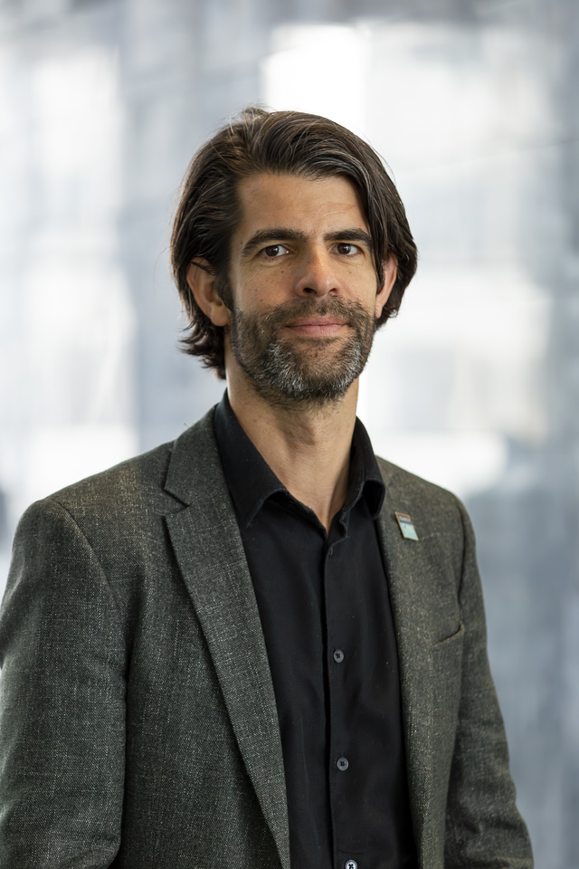

01 / ACQUISITION
Quantitative MRI
Designing and validating MRI methods that measure tissue properties, including R1 and R2*.
MAgnetic Resonance QUantitative EStimation. We develop and apply quantitative MRI methods to better measure the living brain.


At MaRQuEs Lab, we work on quantitative magnetic resonance imaging (qMRI): techniques that turn MRI signals into meaningful, reproducible measurements of tissue properties. We aim at being quantitative but can accept we might just be getting a good estimate. We know there are no perfect models, but they can at least structure our understanding.
MaRQuEs Lab is the MR Structural & Quantitative Imaging group at the Donders Centre for Cognitive Neuroimaging, Radboud University in Nijmegen, The Netherlands.
From acquisition and signal modelling to open tools and clinical research, we aim to make quantitative imaging more reliable and useful for understanding the human brain.
Connecting MRI physics with robust measurements of brain tissue.
Designing and validating MRI methods that measure tissue properties, including R1 and R2*.
Studying tissue microstructure and developing imaging approaches to probe myelin and iron.
Building reproducible, practical methods that connect MRI physics to neuroscience and clinical questions.
Open-source toolboxes supporting quantitative MRI, susceptibility imaging, and reproducible data workflows.
A MATLAB-based toolbox for processing quantitative susceptibility mapping and related MRI data.
Explore SEPIA on GitHub ↗ Open-source toolbox
Open-source toolboxGPU-accelerated MATLAB tools for model fitting and optimization in MRI research.
Explore GACELLE on GitHub ↗Quantitative Imaging Derived Biomarkers in BIDS: tools for reproducible qMRI workflows.
Explore QuIDBBIDS on GitHub ↗Open dataExplore published datasets from the Donders Centre for Cognitive Neuroimaging associated with José P. Marques.
Browse datasets on data.ru.nl ↗For the latest publications and a complete, up-to-date list of our research, visit Google Scholar.
View latest publications on Google Scholar ↗Based at the Donders Centre for Cognitive Neuroimaging, Radboud University.

Group member · MR physics and image analysis
Radboud University profile ↗PhD candidate
Radboud University profile ↗PhD candidate
LinkedIn profile ↗Postdoctoral researcher
LinkedIn profile ↗Postdoctoral researcher
LinkedIn profile ↗Official group pages, research profiles, and scholarly profiles.